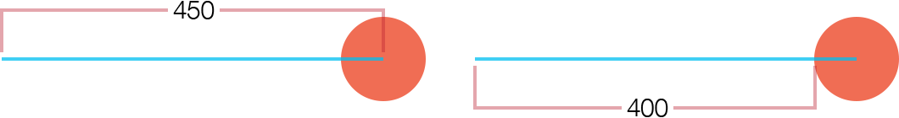

Extending Anchor Points
In Solar2D, all display objects have an anchor point. Essentially, this can be imagined as a “pin” point within the object’s bounds around which all transforms occur — x/y positioning, rotation, scaling, etc. For example, if an object’s anchor point is set at the
Anchor Overview

By default, anchor points are set via the object properties of anchorX and anchorY. The value of these are typically decimal values between 0.0 and 1.0, with this basic representation:
0.0represents the top or left edge.0.5(default) represents the center.1.0represents the bottom or right edge.
Naturally, values between 0.1, 0.25, 0.84, etc.)
As an example, to set an anchor point at the 0.0 0)
local object = display.newRect( 150, 150, 100, 100 )
-- Set anchor to top-left
object.anchorX = 0
object.anchorY = 0
-- Transition the object to test anchor point
transition.to( object, { time=2000, rotation=45, delay=500 } )
Similarly, to set the anchor at the 1.0 1)
local object = display.newRect( 150, 150, 100, 100 )
-- Set anchor to bottom-right
object.anchorX = 1
object.anchorY = 1
-- Transition the object to test anchor point
transition.to( object, { time=2000, rotation=45, delay=500 } )
Anchor points can also be set to some interior point as well, for example 25% from the left edge:
local object = display.newRect( 150, 150, 100, 100 )
object.anchorX = 0.25
object.anchorY = 0.25
-- Transition the object to test anchor point
transition.to( object, { time=2000, rotation=45, delay=500 } )
Extending Anchor Points
The default “clamped” values of 0.0 to 1.0 accomodate the majority of usage cases, from any point along an object’s outer edge to any point within it — but what if we wanted to set the anchor point to some theoretical point outside of the object’s bounds?
The first mandatory step in extending anchor points is to disable the "isAnchorClamped" setting of display.setDefault():
display.setDefault( "isAnchorClamped", false )
Now, anchor points set to values outside the 0.0–1.0
local object = display.newRect( 150, 150, 100, 100 )
object.anchorX = -1
object.anchorY = 1.5
-- Transition the object to test anchor point
transition.to( object, { time=2000, rotation=45, delay=500 } )
One specific example where this approach is useful is rotating one object around another object, like a planet orbiting the sun. If the anchor point was clamped to points inside or along the object’s edge, it could only rotate in a limited perspective, but with "isAnchorClamped" set to false, we can easily make the planet orbit the sun:
display.setDefault( "isAnchorClamped", false )
local sun = display.newCircle( display.contentCenterX, display.contentCenterY, 24 )
sun:setFillColor( 1.0, 0.78, 0 )
local earth = display.newCircle( display.contentCenterX, display.contentCenterY, 6 )
earth:setFillColor( 0, 0.5, 0.7 )
earth.anchorX = -10.0
transition.to( earth, { time=8000, rotation=-360, iterations=0 } )
Pixels vs. Range
As illustrated above, setting an anchor point is based on a range relative to the object’s bounds: 0 is top/left, 0.5 is center, 1 is bottom/right, etc. Similarly, assuming anchor clamping is disabled, a value of 2.0 extends the anchor 200% right or down from the -0.5 extends it 50% above or left of the
This is logical enough, but what if we needed to set the anchor at a specific pixel point within an object or a specific pixel distance outside its bounds? For example, what if an object was 86×90 pixels in size and we wanted to set its anchor at 12 pixels in from the
Doing so is easily accomplished with some basic math. Simply take the pixel inset (12) and divide it by the width of the example object (86), setting that as the object’s anchorX value. Then do the same for the y anchor, dividing 12 by 90 and setting that value as anchorY:
local object = display.newRect( 150, 150, 86, 90 ) object.anchorX = 12 / object.contentWidth -- 0.13953488372093 object.anchorY = 12 / object.contentHeight -- 0.133333333333333
Note that if you’re extending an anchor point outside of an object’s bounds, you may need to factor in half of the object’s width. For instance, assuming the orange circle below is 100×100 pixels in size, and you want its anchor point to be far to the left (end of the blue line), the proper calculation would be -400/100 and thus -4 for anchorX.

Why -4 instead of -4.5? Because, as you can see in the diagram, the desired anchor point is 400 pixels outside the left edge of the circle, and since 0 represents the circle’s left edge, the portion of the blue line that extends into the center of the circle (50 pixels) can be disregarded.
Conclusion
With this optional setting, you have access to virtually any anchor point inside or outside an object’s bounds, and with some simple math, you can even pinpoint an anchor point at a pixel location relative to an object’s bounds.